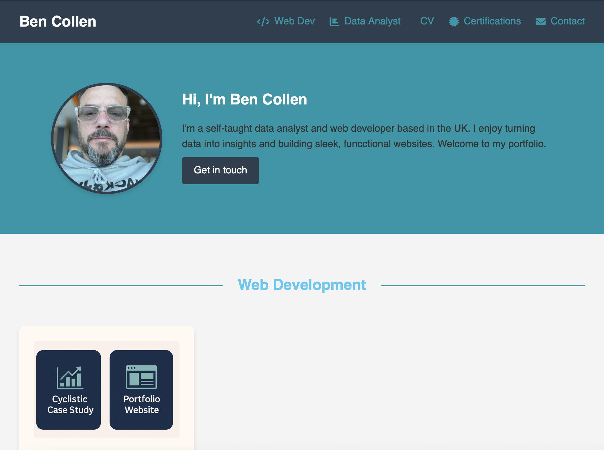
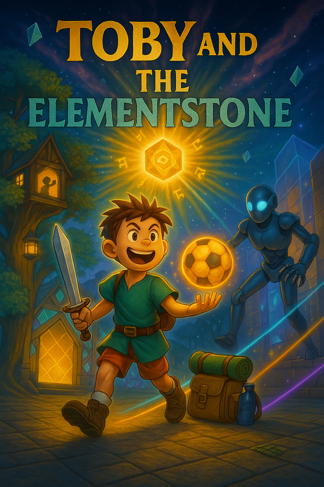
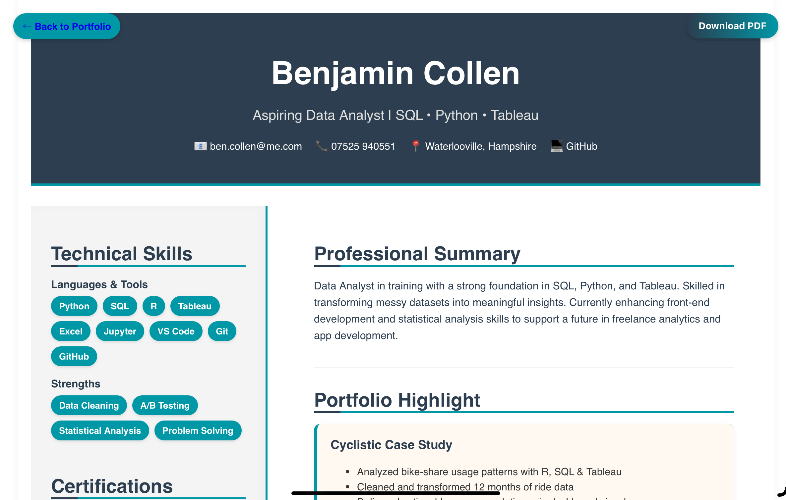

Hi, I'm Ben Collen
I'm a self-taught data analyst and web developer based in the UK. I enjoy turning data into insights and building sleek, functional websites. Welcome to my portfolio.
Get in touchWeb Development

Portfolio Website
A responsive and modern personal website built from scratch using HTML, CSS, and JavaScript.
Data Analyst

Cyclistic Capstone Case Study
Analyzed Divvy bike-share data using R. Identified trends to support marketing strategies.
My Projects

Toby and the Element Stone
A creative digital storybook built in collaboration with my son. Features original artwork and interactive web layout.
Read the StorybookMy CV

Professional Summary
- Data Analysis (Python, R, SQL)
- Web Development (HTML/CSS/JS)
- Data Visualization (Tableau)
- Machine Learning Fundamentals